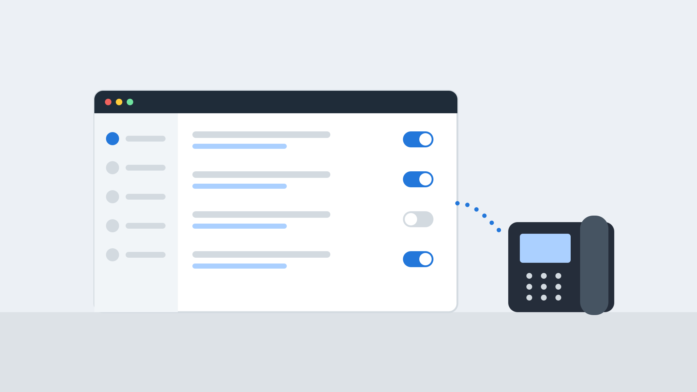
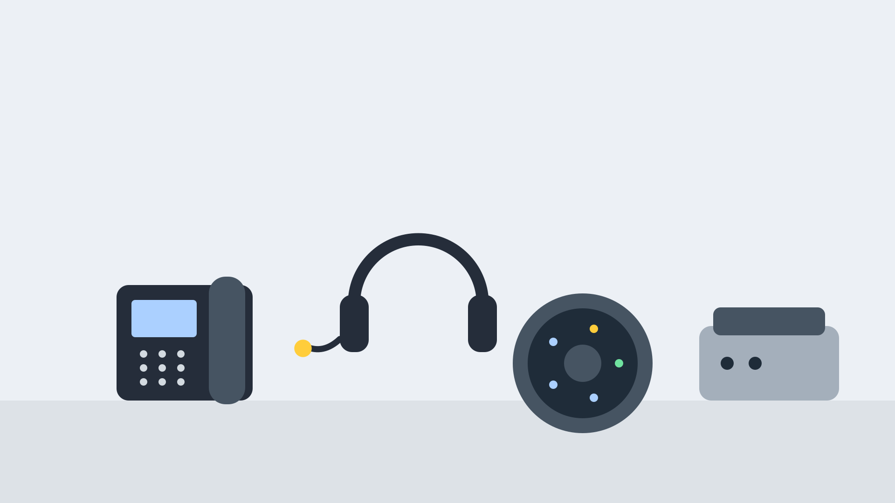
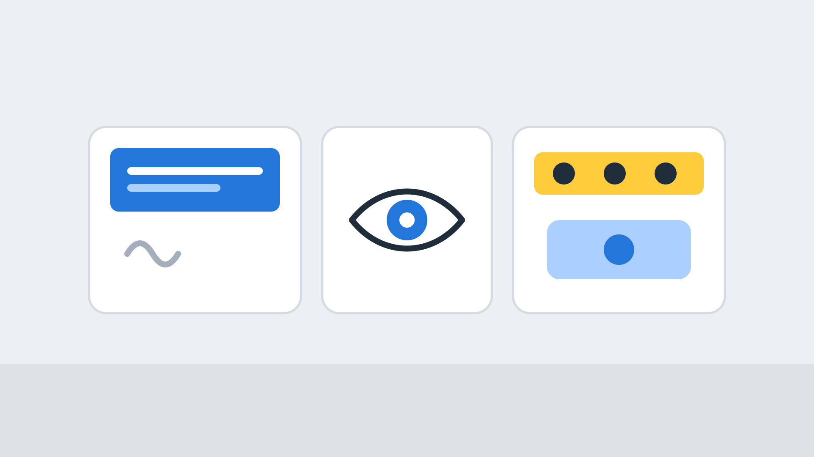

Gamma Horizon
A hosted phone system on a UK carrier's own network, with Teams, Webex and a contact centre when you need them. Supplied and supported by Extera.
A hosted phone system on a UK carrier's own network
Horizon is a cloud business phone system from Gamma, a UK telecoms carrier. Calls run over Gamma's own network, you manage the system in a web portal, and there is no phone system hardware to buy or maintain.
Extera, based in Banbury, Oxfordshire, supplies and supports Gamma Horizon hosted telephony for UK businesses, with our own engineers on hand.
- Fully hosted, with nothing to install onsite
- Managed through an easy web portal
- Fixed and mobile telephony in one system
- Add collaboration, contact centre and analytics as you need them

Figures are published by Gamma and describe its own business and platform.
What is included with the Gamma Horizon phone system
Choose a topic to see how it works and what to check.
Apps and collaboration
Collaborate, a mobile app and a browser client, so staff can work from anywhere.
Apps →Microsoft Teams and Webex
Add Horizon calling to Microsoft Teams, or choose Horizon with Webex for one collaboration platform.
Teams and Webex →Contact centre
Horizon Contact for omnichannel customer service, linked to your phone system.
Contact centre →Analytics and integrations
Call and contact analytics, a receptionist console and links to 200+ CRM packages.
Analytics →Network and resilience
Gamma's own UK network, multiple data centres and 24/7 first-line support.
Network →Not sure where to start?
Tell us how your team works and we will recommend the right Horizon package.
Talk to us →Horizon hosted telephony essentials, ready to use
Set up and changed by you in the web portal, or by us on your behalf.
Auto attendant and IVR
Build menus that send callers to the right team, with different routing in and out of hours.
Hunt groups
Ring a team in the order you choose so every call is picked up.
Voicemail to email
Voicemails arrive as audio files in your inbox so you never miss one.
Call recording
Record calls for training and compliance. The recording level depends on your tier.
Conferencing
Hold conference calls from the same system, with a built-in conference bridge.
Scheduling and failover
Schedule routing for opening hours and holidays, with automatic failover if a site goes down.
Equipment to suit every desk and room
Horizon works with desk phones, headsets and conference equipment from well-known makers, and with the app on a computer or mobile. We help you choose what fits, and supply it.
- Desk phones and cordless handsets
- Headsets for office and contact centre use
- Conference phones for meeting rooms
- Partners include Yealink, EPOS, Sennheiser, Poly and Cisco

Designed to work for everyone
Gamma highlights accessibility features for people with hearing, vision or mobility impairments. If someone on your team needs adjustments, tell us early and we will check what is available.
- Options for staff with hearing impairments
- Options for staff with vision impairments
- Options for staff with mobility needs
- Advice on handsets and software settings

Is Horizon right for you?
A good fit if…
- You want a hosted system with nothing to maintain onsite
- You value a UK carrier's own network behind your calls
- You have hybrid or home workers and several sites
- You are moving off ISDN or PSTN lines
- You use Microsoft Teams or want one collaboration platform
Think about…
- It is cloud only, so there is no onsite option
- Some features depend on your tier, such as call recording and CRM integration
- Teams and collaboration features can be separate add-ons
- Very large enterprises may want a different platform
Horizon, 3CX and 8x8 at a glance
All three are strong systems. They suit different ways of working.
| Gamma Horizon | 3CX | 8x8 | |
|---|---|---|---|
| How it runs | Hosted on Gamma's UK network | Onsite, your cloud or hosted | Hosted on 8x8's global platform |
| Pricing | Per user per month, in tiers | Annual licence by simultaneous calls | Per user per month, in plans |
| Contact centre | Horizon Contact, with Akixi analytics | Built-in queues and wallboards | Full omnichannel contact centre |
| Microsoft Teams | Horizon for Teams | Microsoft 365 sync | 8x8 Voice for Teams |
| Best for | UK businesses wanting a carrier-backed hosted system | Control and low running cost | International and multichannel |
How a Horizon project works
Survey
We review your users, numbers, sites, lines and handsets.
Design
We agree your call flows, packages, add-ons and equipment.
Set up
We configure Horizon, provision phones and prepare your numbers.
Go live
We port numbers, train your team and support you after launch.
Gamma Horizon FAQs
What is Gamma Horizon?
A hosted business phone system from Gamma that runs over Gamma's UK network. You manage it in a web portal, and there is no hardware to install onsite.
Can I keep my phone numbers?
Yes. We port your numbers to Horizon and plan the cutover with you.
Does Horizon work with Microsoft Teams?
Yes. See Microsoft Teams and Webex.
Is there a contact centre?
Yes. Horizon Contact works with Horizon. See contact centre.
Does it replace my ISDN lines?
Yes. Horizon is internet-based, so it replaces ISDN and analogue lines. See lines and calls.